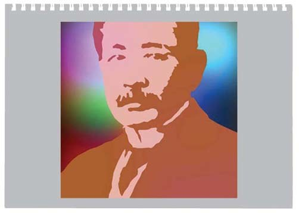

Introduction

秋学期 2012年
Introduction
自己紹介
文学入門
日本文学入門
入門ってなんだ？
Introduction
8/28/12
Introduction to class.
Expectations
English/Japanese policy
Japanese Literary Terminology
Poetry Reading?
Song Reading?
速読
音読
夏目漱石
帰ろふと泣かずに笑へ時鳥 1889年
かえろふとなかずにわらへほととぎす
瓢箪は鳴るか鳴らぬか秋の風 1916年
ひょうたんはなるかならぬかあきのかぜ
何となう死に来た世の惜まるゝ1894年
なんとなうしににきたよのおしまるる
1902年
三階に独り寐に行く寒かな
さんかいにひとりねにゆくさむさかな
句あるべくも花なき国に客となり
くあるべくもはななきくににきゃくとなり
筒袖や秋の柩にしたがはず
つつそでやあきのひつぎにしたがはず
手向くべき線香もなくて暮の秋
たむくべきせんこうもなくてくれのあき
霧黄なる市に動くや影法師
きりきなるいちにうごくやかげぼうし
きりぎりすの昔を忍び帰るべし
きりぎりすのむかしをしのびかえるべし
招かざる薄に帰り来る人ぞ
まねかざるすすきにかえりくるひとぞ
落ちし雷を盥に伏せて鮓の石
おちしらいをたらいにふせてすしのいし
引窓をからりと空の明け易き
ひきまどをからりとそらのあけやすき
ぬきんでゝ雑木の中や棕櫚の花
ぬきんでてぞうきのなかやしゅろのはな
HOMEWORK:
Short Assignment 1
Pick a poem above.
Practice reading it aloud until you can do so fluidly.
Research the context and meaning of the poem. What does it mean to you? Use this link for help.
Begin studying Vocab 1
Read the Otsuichi story